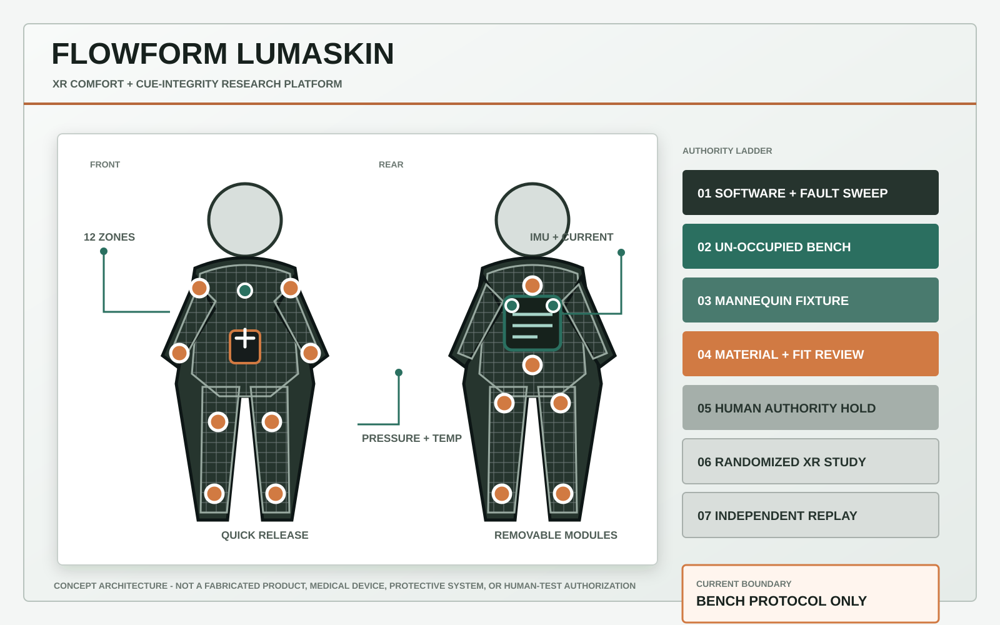
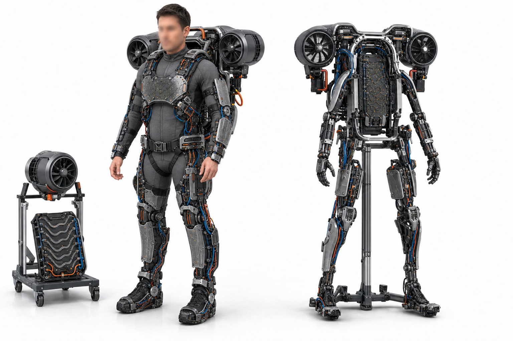
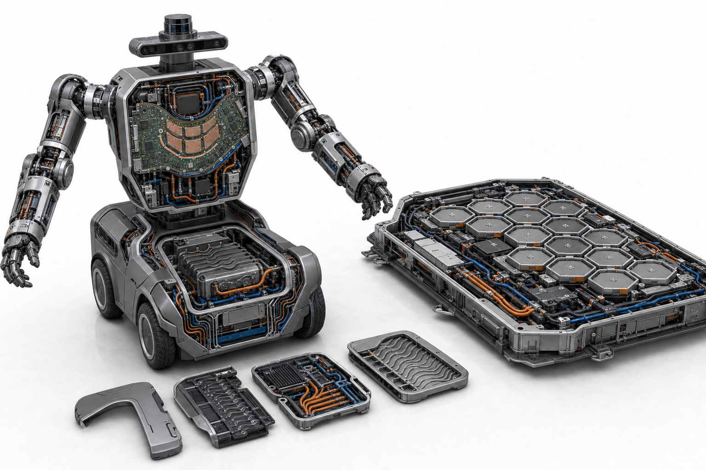
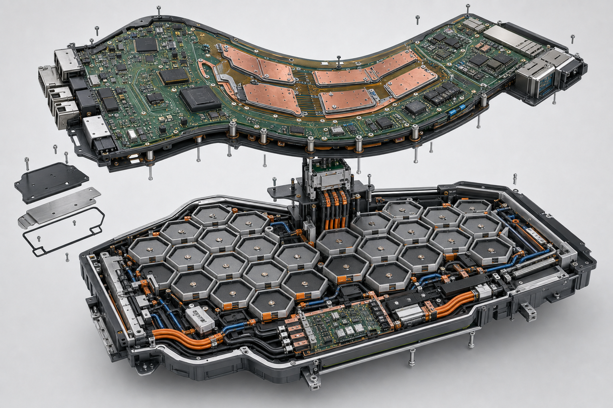

Asset 01 / 04
LumaSkin XR Research V1
Soft, instrumented garment architecture for bounded spatial haptics, XR cue integrity, comfort measurement, and a fail-closed bench-to-human validation ladder.
- Status
- Bench protocol / human tests locked
- Resolution
- 1600 x 1000
- SHA-256
- CFAD6841...9CC01CF

Asset 02 / 04
LumenShell Dual-Mode VTOL V3
Corrected wearable and unoccupied-autonomous architecture with a detachable propulsion research module, explicit interlocks, frequency-based health sensing, and a ground-first validation path.
- Status
- Generated concept
- Resolution
- 1536 x 1024
- SHA-256
- 4E6A1BF5...EA9E81

Asset 03 / 04
Robot + EV V2 Lineage
Archived reconciliation step that restored the cymatic channel hypothesis and separated the electric-vehicle honeycomb pack from the robot service battery. Superseded by the dual-mode architecture above.
- Status
- Superseded concept
- Resolution
- 1536 x 1024
- SHA-256
- 11ACCF9E...DF87AE

Asset 04 / 04
Curved Compute + Honeycomb Energy V3
Reference architecture for conformal rigid-flex compute, segmented thermal spreading, replaceable cell cassettes, and maintainable power and cooling routes.
- Status
- Generated concept
- Resolution
- 1536 x 1024
- SHA-256
- 10472C90...FFECB7
